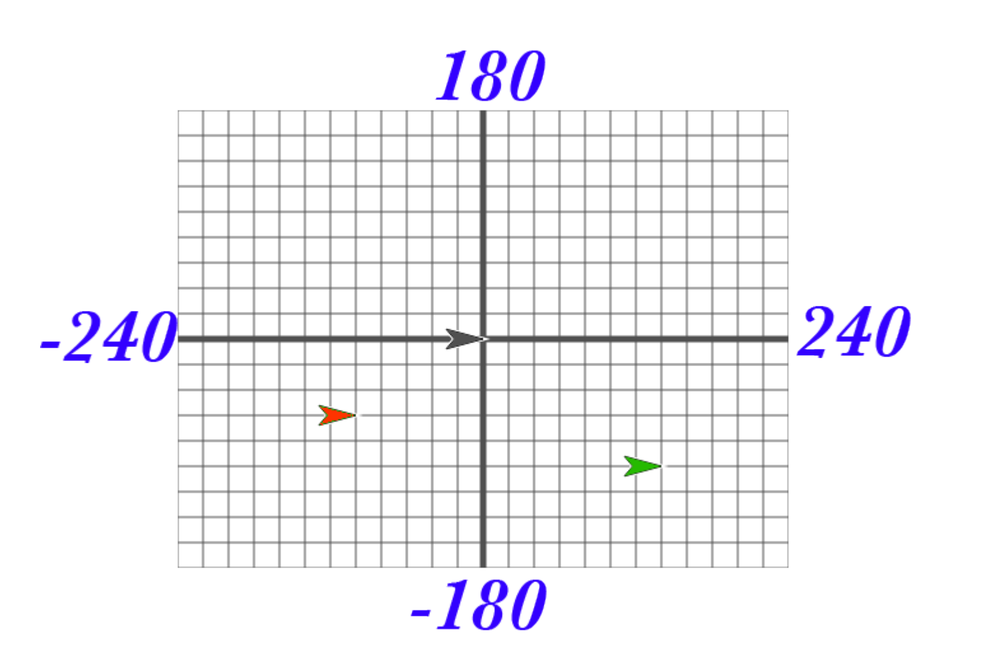

Review the Coordinate System¶

Answer the following in your Notebook¶
What are the coordinates of the red sprite?
What are the coordinates of the green sprite?
In your SNAP! window, take a look at the blocks under the Motion tab. The majority of the blocks there will help you position your sprite on the stage. Try them and see what they do! Change the input values to see what happens.
List at least 4 blocks from the Motion tab that will change the position of a sprite.
Make sure you know how to use the say block¶
Open Snap! and start a new Project.
Using the
sayblock have your sprite say “Hello World”.Save your with the file name Hello World.